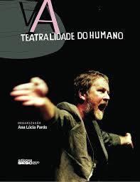

Artigos



Pós-doutora no Programa de Pós-Graduação em Cultura e Territorialidades (PPCULT-UFF). Doutora e mestre em Políticas Públicas e Formação Humana (PPFH-UERJ). Assessora da Comissão de Cultura da Assembleia Legislativa do Estado do Rio de Janeiro (ALERJ). Atriz, jornalista, gestora cultural, pesquisadora, professora da Associação Brasileira de Gestão Cultural (ABGC). Na gestão pública, assumiu funções de Ouvidora e de Coordenadora da Divisão de Políticas Culturais do Ministério da Cultura na Representação Regional RJ/ES; Assessora da Divisão de Estudos e Pesquisas da Funarte; da Fundação Biblioteca Nacional, Assessora especial da Fundação Nacional dos Povos Indígenas – FUNAI e da Secretaria de Meio Ambiente (AM). Curadora e coordenadora de painéis, ciclo/seminários nacionais e internacionais de artes, cultura e pensamento.
A versão antiga do site está neste site.